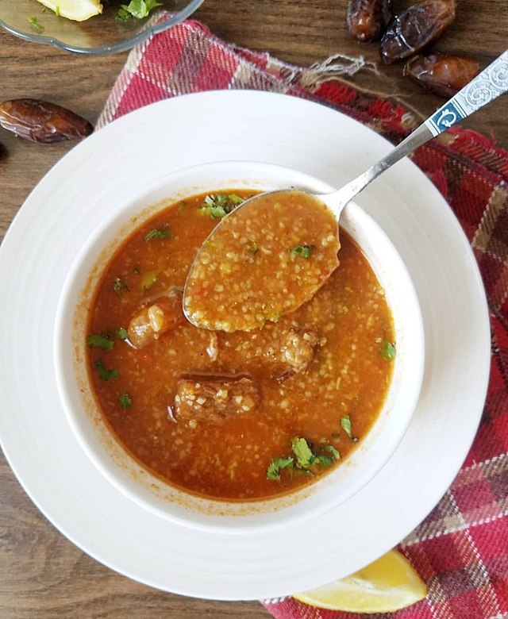

Chorba Hamra bel Frik (Algerian Lamb, Tomato, and Freekeh Soup)

Description
This traditional Algerian soup is prepared every day during the month of Ramadan by most families. It is usually
accompanied by briks or boreks.
ingredients
- 1 cup freekeh
- water to cover
- ¾ pound lamb meat, cut into 1 1/2-inch cubes
- 1 onion, grated
- 1 teaspoon ground black pepper
- 1 teaspoon paprika
- 1 teaspoon ground cinnamon
- salt to taste
- 3 tablespoons vegetable oil
- 1 bunch fresh cilantro, finely chopped, divided
- 1 bunch fresh mint, finely chopped, divided
- 1 stalk celery
- ½ (14 ounce) can chickpeas, drained
- 1 tablespoon tomato paste
- 1 zucchini, diced
- 1 carrot, diced
- 3 medium ripe tomatoes
- 1 potato, diced
Directions
- Step 1
Place freekeh in a bowl and cover with cold water. Set aside.
- Step 2
Combine lamb, onion, pepper, paprika, cinnamon, and salt in a pot. Add oil, 1/2 of the cilantro, 1/2 of the
mint, and celery and simmer over low heat for 15 minutes. Stir in chickpeas and cover with a little water.
Bring to a gentle simmer. Add tomato paste, zucchini, and carrot and mix well.
- Step 3
Set a steamer over the pot and add tomatoes. Cover and steam tomatoes until soft, about 5 minutes. Crush
tomatoes using a wooden spoon so pulp drips into the soup. Discard leftover tomato peels. Add potato and
enough water to cover. Simmer until potato is soft, about 10 minutes.
- Step 4
Drain freekeh and add to the soup. Simmer until soft, about 15 minutes. Remove celery stalk. Sprinkle soup
with remaining cilantro and mint before serving.